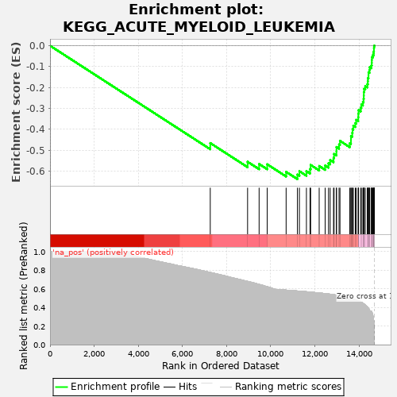
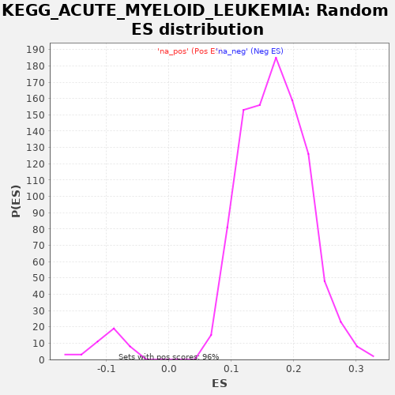

| | | Dataset | drug_embeddings_gsea |
| Phenotype | NoPhenotypeAvailable |
| Upregulated in class | na_neg |
| GeneSet | KEGG_ACUTE_MYELOID_LEUKEMIA |
| Enrichment Score (ES) | -0.638896 |
| Normalized Enrichment Score (NES) | -6.407268 |
| Nominal p-value | 0.0 |
| FDR q-value | 0.0 |
| FWER p-Value | 0.0 |
Table: GSEA Results Summary

Fig 1: Enrichment plot: KEGG_ACUTE_MYELOID_LEUKEMIA
Profile of the Running ES Score & Positions of GeneSet Members on the Rank Ordered List
| PROBE | GENE SYMBOL | GENE_TITLE | RANK IN GENE LIST | RANK METRIC SCORE | RUNNING ES | CORE ENRICHMENT | | 1 | PIK3R5 | | | 7260 | 0.776 | -0.4662 | No |
| 2 | RUNX1T1 | | | 8951 | 0.679 | -0.5557 | No |
| 3 | FLT3 | | | 9473 | 0.647 | -0.5666 | No |
| 4 | SOS2 | | | 9840 | 0.622 | -0.5679 | No |
| 5 | TCF7L1 | | | 10697 | 0.585 | -0.6040 | No |
| 6 | AKT3 | | | 11209 | 0.576 | -0.6169 | Yes |
| 7 | PIK3CD | | | 11299 | 0.574 | -0.6011 | Yes |
| 8 | PIK3CG | | | 11617 | 0.568 | -0.6010 | Yes |
| 9 | TCF7 | | | 11781 | 0.565 | -0.5906 | Yes |
| 10 | PIK3CB | | | 11808 | 0.564 | -0.5708 | Yes |
| 11 | PPARD | | | 12195 | 0.555 | -0.5760 | Yes |
| 12 | SOS1 | | | 12466 | 0.549 | -0.5735 | Yes |
| 13 | RPS6KB2 | | | 12618 | 0.544 | -0.5631 | Yes |
| 14 | NRAS | | | 12693 | 0.541 | -0.5475 | Yes |
| 15 | PIM2 | | | 12845 | 0.537 | -0.5373 | Yes |
| 16 | PIM1 | | | 12869 | 0.536 | -0.5184 | Yes |
| 17 | CCNA1 | | | 12976 | 0.531 | -0.5054 | Yes |
| 18 | EIF4EBP1 | | | 12978 | 0.531 | -0.4852 | Yes |
| 19 | RUNX1 | | | 13095 | 0.527 | -0.4730 | Yes |
| 20 | ARAF | | | 13137 | 0.525 | -0.4558 | Yes |
| 21 | KIT | | | 13582 | 0.501 | -0.4670 | Yes |
| 22 | MAP2K2 | | | 13634 | 0.498 | -0.4515 | Yes |
| 23 | PIK3CA | | | 13636 | 0.498 | -0.4325 | Yes |
| 24 | LEF1 | | | 13693 | 0.494 | -0.4175 | Yes |
| 25 | TCF7L2 | | | 13706 | 0.493 | -0.3995 | Yes |
| 26 | RARA | | | 13742 | 0.490 | -0.3832 | Yes |
| 27 | STAT5B | | | 13832 | 0.483 | -0.3708 | Yes |
| 28 | AKT2 | | | 13873 | 0.480 | -0.3552 | Yes |
| 29 | PIK3R3 | | | 13963 | 0.471 | -0.3434 | Yes |
| 30 | SPI1 | | | 13969 | 0.470 | -0.3258 | Yes |
| 31 | PIK3R2 | | | 13979 | 0.469 | -0.3085 | Yes |
| 32 | BRAF | | | 14075 | 0.460 | -0.2974 | Yes |
| 33 | JUP | | | 14105 | 0.455 | -0.2820 | Yes |
| 34 | HRAS | | | 14175 | 0.445 | -0.2698 | Yes |
| 35 | MTOR | | | 14207 | 0.440 | -0.2551 | Yes |
| 36 | CCND1 | | | 14216 | 0.438 | -0.2389 | Yes |
| 37 | BAD | | | 14218 | 0.438 | -0.2223 | Yes |
| 38 | ZBTB16 | | | 14231 | 0.436 | -0.2065 | Yes |
| 39 | CHUK | | | 14282 | 0.426 | -0.1936 | Yes |
| 40 | STAT5A | | | 14377 | 0.407 | -0.1845 | Yes |
| 41 | RPS6KB1 | | | 14398 | 0.402 | -0.1706 | Yes |
| 42 | IKBKB | | | 14402 | 0.399 | -0.1555 | Yes |
| 43 | KRAS | | | 14429 | 0.393 | -0.1423 | Yes |
| 44 | IKBKG | | | 14430 | 0.392 | -0.1273 | Yes |
| 45 | MAPK3 | | | 14476 | 0.370 | -0.1163 | Yes |
| 46 | PIK3R1 | | | 14486 | 0.366 | -0.1029 | Yes |
| 47 | RAF1 | | | 14562 | 0.357 | -0.0944 | Yes |
| 48 | PML | | | 14577 | 0.352 | -0.0820 | Yes |
| 49 | MAP2K1 | | | 14579 | 0.351 | -0.0686 | Yes |
| 50 | STAT3 | | | 14582 | 0.347 | -0.0555 | Yes |
| 51 | NFKB1 | | | 14621 | 0.322 | -0.0458 | Yes |
| 52 | CEBPA | | | 14654 | 0.284 | -0.0372 | Yes |
| 53 | MAPK1 | | | 14666 | 0.254 | -0.0282 | Yes |
| 54 | RELA | | | 14675 | 0.231 | -0.0200 | Yes |
| 55 | AKT1 | | | 14676 | 0.227 | -0.0113 | Yes |
| 56 | GRB2 | | | 14682 | 0.197 | -0.0041 | Yes |
| 57 | MYC | | | 14692 | 0.134 | 0.0004 | Yes |
Table: GSEA details [plain text format]

Fig 2: KEGG_ACUTE_MYELOID_LEUKEMIA: Random ES distribution
Gene set null distribution of ES for KEGG_ACUTE_MYELOID_LEUKEMIA